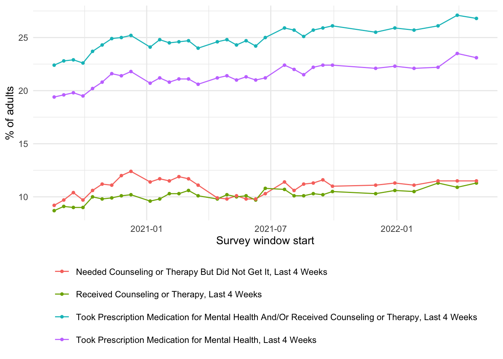

The following objects are masked from 'package:stats':
filter, lag
The following objects are masked from 'package:base':
intersect, setdiff, setequal, union
Code
library(ggplot2)library(here)
here() starts at /Users/cedric/StatProg2-Group-Project
Decision: Mental Health × COVID-19 infection rates
We have committed to the Mental Health dataset and dropped the US Supply Chain dataset (our initial analysis found essentially no signal in it and its headline risk variable was data leakage. see Considered and rejected at the end). We pair the Household Pulse mental-health data with state-level COVID-19 case data to ask whether pandemic intensity tracked the population’s unmet need for mental-health support.
Our two focused research questions and their planned outputs are in Research questions; the assignable analysis plan is in Analysis plan. The core analysis is already implemented and producing results in report.qmd.
Mental-health outcome (primary dataset). The data comes from the U.S. Census Bureau’s Household Pulse Survey, published by the National Center for Health Statistics (NCHS / CDC) and distributed through data.gov. As a work of the US federal government it is in the public domain (U.S. Government Work / no copyright), so it is free to use, redistribute and analyse with attribution to the source.
COVID-19 exposure (second dataset). State-level COVID-19 case counts come from the New York Times COVID-19 data repository (https://github.com/nytimes/covid-19-data), file us-states.csv (saved locally as Data/covid_us_states_nyt.csv). It reports cumulative confirmed cases and deaths per US state per day. The NYT releases this data for free use with attribution for non-commercial purposes, which covers this academic project. We difference the cumulative counts into daily new cases and normalise by 2020 Census state population to get new cases per 100,000.
What is in it
Each row reports one estimate: the percentage of US adults who, in the last 4 weeks, took a given mental-health-care action, for a particular subgroup, geography and time period.
Key variables:
Indicator — one of four actions:
“Received Counseling or Therapy, Last 4 Weeks”
“Needed Counseling or Therapy But Did Not Get It, Last 4 Weeks”
“Took Prescription Medication for Mental Health, Last 4 Weeks”
“Took Prescription Medication for Mental Health And/Or Received Counseling or Therapy, Last 4 Weeks”
Group / Subgroup — how the population is split (By Sex, By Age, National Estimate, By Presence of Symptoms of Anxiety/Depression, By Race/Hispanic ethnicity, By Education, By State, By Sexual orientation, By Disability status, By Gender identity).
State — geography of the estimate.
Time Period — the survey window (number, label, start and end dates).
Value, LowCI, HighCI — the estimated percentage and its 95% confidence interval.
Suppression Flag — marks estimates withheld for being statistically unreliable.
Research questions
We focus on two questions, both centred on whether COVID-19 infection intensity is linked to the population’s need for mental-health support.
For the results shown here we use the indicator “Needed Counseling or Therapy But Did Not Get It, Last 4 Weeks” as a concrete measure of unmet need, and we do find a signal there (below). We are not yet committing to this single indicator, though. The two questions below are stated for the current indicator but carry over to those variants unchanged.
Exploratory / associational (primary) — Across US states and survey windows, is a higher COVID-19 case rate associated with a higher unmet need for mental-health support?
Response variable:unmet_need (% adults, By State). Predictor:covid_rate (new COVID cases per 100k during each survey window).
Method & why: ordinary linear regression lm(unmet_need ~ covid_rate) — both variables are continuous and we want the direction/size of a linear association.
Null hypothesis: no association, i.e. the slope on covid_rate is 0.
What a meaningful result looks like: a slope reliably different from 0.
Planned output: a scatter plot (“Unmet mental-health need vs COVID case rate, by state and survey window”) with a fitted line, plus the slope coefficient, its 95% CI and p-value. (Implemented — current result: positive and significant but weak: slope ≈ 5.4e-4, 95% CI ≈ [3.4e-4, 7.5e-4], p ≈ 3e-7, R² ≈ 0.02.)
Inferential status: this is exploratory and ecological (state-level aggregates, observational) — it generates a hypothesis about a link, it does not establish individual-level causation.
Descriptive (temporal) — How did national unmet need and the national COVID case rate move together over Aug 2020 – Apr 2022?
Variables: national unmet_need and national covid_rate by survey window start date.
Method & why: time-series description.
What a meaningful result looks like: visible alignment (or clear non-alignment) between the two series across the pandemic waves.
Planned output: a two-panel time-series plot of national unmet need and national COVID case rate on a shared time axis. (Implemented.)
Context and audience
The analysis targets a public-health and policy-oriented audience interested in how pandemic intensity related to unmet mental-health need across US states. Suitable presentation formats: a Quarto web report / project website and a chart-driven data story.
2. Initial data analysis
The core joined analysis (mental health x COVID) is implemented in report.qmd; the exploratory IDA of the mental-health dataset alone is in eda-mentalhealth.qmd. A short version below reads the cleaned data produced by code/02_clean.R.
rows indicators states windows suppressed_NA
10404 4 52 34 490
Code
range(mh$start_date, na.rm =TRUE)
[1] "2020-08-19" "2022-04-27"
Data-quality observations: values are pre-aggregated percentages with
confidence intervals; some estimates are suppressed for reliability (giving NA);
subgroup definitions are well documented; coverage runs roughly Aug 2020 – Apr 2022.
Code
#| label: proposal-ida-trend#| fig-cap: "National value of each mental-health indicator over Aug 2020 – Apr 2022."mh |>filter(Group =="National Estimate", State =="United States", !is.na(Value)) |>ggplot(aes(start_date, Value, colour = Indicator)) +geom_line() +geom_point(size =1) +labs(x ="Survey window start", y ="% of adults", colour =NULL) +theme_minimal() +theme(legend.position ="bottom") +guides(colour =guide_legend(nrow =4))

3. Analysis plan
Robustness: add a time lag and state fixed effects to RQ1; report whether the association strengthens, Short results note + updated coefficient
Write-up & narrative: turn results into the report/website data story; caption every figure, Final Quarto report / site
Cleaning / transformation already handled: date parsing of survey windows; differencing cumulative COVID counts and flooring occasional negative corrections at 0; per-100k normalisation via 2020 Census populations; dropping suppressed estimates.
Main uncertainties / risks:
Ecological design. Both datasets are state-level aggregates, so any association is between states, not individuals — we report associations, not individual causation.
Weak effect size. RQ1 is significant but explains little variance (R² ≈ 0.02); the lag / fixed-effects tests whether a cleaner relationship emerges.
Suppressed estimates create non-random missingness for smaller states.
Reporting artefacts in COVID counts (weekend dips, backfills) are smoothed by aggregating to the ~2-week survey window.
Considered and rejected — US Supply Chain Risk Analysis
We also explored the Kaggle US Supply Chain Risk Analysis Dataset (CC0; 1,000 records, 24 variables) for a delay-prediction project. We rejected it because our initial modelling found essentially no signal: regressing Delay_Days on the available predictors gave R² ≈ 0.007, adjusted R² negative, F-test p ≈ 0.63, and no significant predictor; the only variable that “explained” delay, Supply_Risk_Flag, turned out to be data leakage (it is exactly 1 whenever Delay_Days > 0). The interesting predictive story simply does not exist in the data.
4. Workflow organisation
Code style. We follow the tidyverse style guide. Well use styler to format R code and agree as a group to write in a consistent style.
Packages & reproducibility.tidyverse for cleaning and plots and lubridate for dates; a few extra packages may be added for tables or model output. We plan to use renv to pin package versions so the project runs on different machines.
Git & task division. One shared GitHub repository. Each member works on their own or task-specific branch if needed, else (based on the small group size) well be working on diffrent files but on the same branch.
.gitignore. We exclude files that need not be shared .Rhistory, .RData, temporary files, secrets such as .env, and large output files.
Next steps
Scope is now locked: the Mental Health × COVID analysis is implemented and producing results (RQ1 and RQ2 above). The remaining weeks go to robustness, presentation and the write-up.
Question for feedback: RQ1’s association may be weak (R² ≈0.02, with “Needed Counseling or Therapy But Did Not Get It, Last 4 Weeks”). Is a same-window state-level comparison the right framing, or should we prioritise the lag / fixed-effects refinement